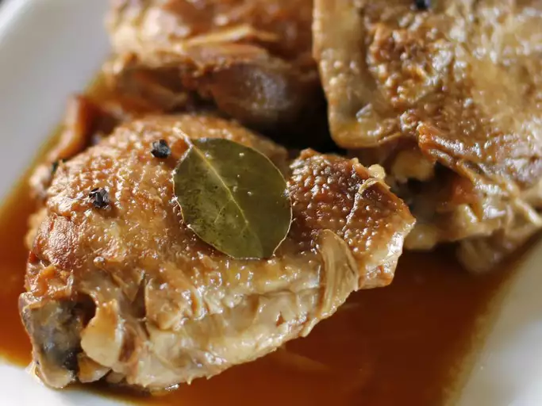

Chicken Adobo

What Is It?
Chicken adobo is a popular dish from Filipino cuisine. It consists of chicken cooked adobo style, where meat is first seared
and then braised in its marinade. The marinade typically consists of ingredients like soy sauce, vinegar, sugar, and spices such as
coriander. In this recipe, we'll teach you how to make some chicken adobo in the comfort of your own kitchen! This recipe is meant to
serve 3-5 people, but the portions are ultimately up to you!
Ingredients
- 10 chicken drumsticks or thighs
- 1 yellow onion, sliced
- 1 cup soy sauce
- 1/2 cup white vinegar
- 2-3 bay leaves
- seasonings: salt, pepper, coriander, etc.
Directions
- Put all of the ingredients in a bowl, making sure that the marinade covers the chicken.
- Leave in the fridge for around an hour.
- Sear the marinated chicken in a medium-sized stockpot.
- Add the rest of the marinade until the chicken is at least 50% covered.
- Enjoy!